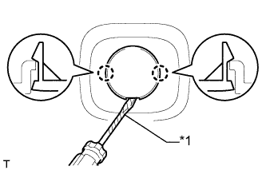
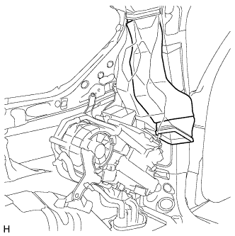

REAR AIR CONDITIONING UNIT > REMOVAL |
| 1. REMOVE UPPER RADIATOR SUPPORT SEAL |
 |
Remove the 13 clips and upper radiator support seal.
| 2. RECOVER REFRIGERANT FROM REFRIGERATION SYSTEM |
Start the engine.
Turn the A/C switch on.
Operate the cooler compressor while the engine speed is approximately 1000 rpm for 5 to 6 minutes to circulate the refrigerant and collect the compressor oil remaining in each component into the cooler compressor.
Stop the engine.
Recover the refrigerant from the A/C system using a refrigerant recovery unit.
| 3. DRAIN ENGINE COOLANT |
Drain the engine coolant (Click here).
| 4. DISCONNECT CABLE FROM NEGATIVE BATTERY TERMINAL |
| Condition | Waiting Time |
| Vehicle enrolled in G-BOOK system | 6 minutes |
| Vehicle not enrolled in G-BOOK system | 1 minute |
| 5. REMOVE REAR NO. 2 SEAT ASSEMBLY (w/ Rear No. 2 Seat) |
Remove the rear No. 2 seat assembly (Click here).
| 6. REMOVE REAR NO. 1 SEATBACK ASSEMBLY |
for 60/40 Split Slide Walk-in Seat Type LH Side:
Remove the rear No. 1 seatback assembly (Click here).
for 60/40 Split Slide Walk-in Seat Type RH Side:
Remove the rear No. 1 seatback assembly (Click here).
| 7. REMOVE REAR NO. 1 FLOOR STEP COVER (w/ Rear No. 2 Seat) |
 |
Using a screwdriver, detach the 2 claws and remove the rear No. 1 floor step cover.
| *1 | Protective Tape |
| 8. REMOVE QUARTER SCUFF PLATE RH (w/ Rear No. 2 Seat) |
| 9. REMOVE REAR DOOR SCUFF PLATE RH |
| 10. REMOVE REAR DOOR OPENING TRIM WEATHERSTRIP RH |
| 11. REMOVE OUTER LAP BELT ANCHOR COVER |
 |
Detach the 3 claws and remove the outer lap belt anchor cover.
| 12. REMOVE TONNEAU COVER ASSEMBLY (w/ Tonneau Cover) |
Remove the tonneau cover.
| 13. REMOVE REAR NO. 1 SEAT OUTER LAP BELT ANCHOR COVER |
 |
Detach the 3 claws and remove the rear No. 1 seat outer lap belt anchor cover.
| 14. REMOVE NO. 1 LUGGAGE COMPARTMENT TRIM HOOK |
 |
Remove the luggage compartment trim hook by turning it clockwise.
| 15. REMOVE NO. 1 TONNEAU COVER HOLDER CAP |
 |
Using a screwdriver, detach the 2 claws and remove the No. 1 tonneau cover holder cap.
| *1 | Protective Tape |
| 16. REMOVE FRONT DECK SIDE TRIM COVER |
|  |
Using a screwdriver, detach the 2 claws and remove the front deck side trim cover.
| *1 | Protective Tape |
| 17. REMOVE ASSIST GRIP PLUG (w/ Rear No. 2 Seat) |
 |
Using a screwdriver, detach the 2 claws and remove the assist grip plug.
| *1 | Protective Tape |
| 18. REMOVE ASSIST GRIP SUB-ASSEMBLY (w/ Rear No. 2 Seat) |
 |
Remove the 2 bolts and assist grip.
| 19. REMOVE DECK TRIM SIDE PANEL ASSEMBLY RH |
 |
Remove the bolt and disconnect the rear No. 1 seat outer belt floor anchor.
 |
Remove the bolt and disconnect the rear No. 2 seat outer belt floor anchor.
Remove the 2 bolts and screw.
Detach the 3 clips and 8 claws.
Disconnect each connector and remove the deck trim side panel.

| 20. REMOVE REAR QUARTER TRIM PANEL ASSEMBLY RH |
| 21. DISCONNECT AIR CONDITIONING TUBE AND ACCESSORY ASSEMBLY |
Remove the bolt.
Disconnect the air conditioning tube and accessory assembly.
Remove the 2 O-rings from the air conditioning tube and accessory assembly.
Using pliers, grip the claws of the clips and slide the 2 clips.
Disconnect the heater water inlet hose and heater water outlet hose.
| 22. REMOVE REAR SIDE NO. 2 AIR DUCT |
 |
Detach the 2 clips.
Detach the clamp and remove the duct.
| 23. REMOVE REAR SIDE NO. 3 AIR DUCT |
Detach the 2 clips and remove the duct.
| 24. REMOVE REAR SIDE NO. 1 AIR DUCT |
 |
Detach the 2 claws and remove the cooler plate.
|  |
Swing the bottom of the duct sideways and remove the duct.
| 25. REMOVE REAR COOLING UNIT ASSEMBLY |
Disconnect the 4 connectors and detach the 3 clamps.
Remove the 5 bolts and rear cooling unit.
| 26. REMOVE CURTAIN SHIELD AIRBAG ASSEMBLY RH |
Disconnect the connector.
Remove the 17 bolts and curtain shield airbag.

| 27. REMOVE REAR ROOF NO. 5 AIR DUCT |
Detach the clip and remove the duct.
| 28. REMOVE REAR ROOF NO. 4 AIR DUCT |
Detach the clip and remove the duct.
| 29. REMOVE REAR ROOF NO. 3 AIR DUCT |
 |
Detach the clip and remove the duct.
| 30. REMOVE REAR ROOF NO. 2 AIR DUCT |
Detach the clip and remove the duct.
| 31. REMOVE REAR ROOF NO. 1 AIR DUCT |
Detach the 4 clips and remove the duct.